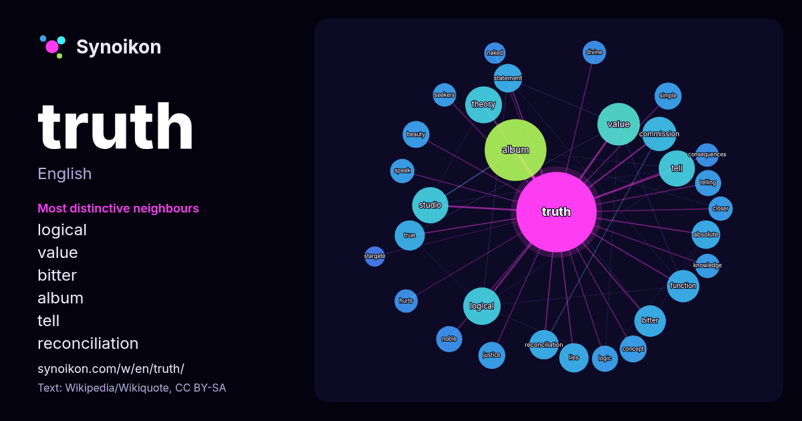

English · popular word
truth
The words found around it in 1564 instances from Wikipedia, Wikiquote, Hacker News.

Most distinctive neighbours
- logical 31×
- value 24×
- bitter 22×
- album 20×
- tell 20×
- reconciliation 19×
- theory 18×
- absolute 17×
- true 15×
- commission 15×
- logic 15×
- beauty 15×
- telling 14×
- noble 14×
- statement 14×
- function 14×
- studio 14×
- simple 13×
- lies 13×
- seekers 13×
× = how many times more often than in general Wikipedia text.
Most frequent neighbours
- album 84
- american 46
- value 40
- film 39
- logical 31
- song 30
- theory 30
- studio 29
- tell 29
- commission 26
- function 23
- bitter 22
- true 20
- lies 19
- reconciliation 19
- absolute 18
- statement 18
- world 18
- love 17
- series 17
In context
- Truth is conformity to reality or fact. It contrasts with falsity or misrepresentation that fails to align with the world. Truth is typically treated as Wikipedia snippets · Truth
- The Truth may refer to: The Truth (1920 film) starring Madge Kennedy The Truth (1960 film) or La Vérité Wikipedia snippets · The Truth
- Hus' phrase Seek the truth, hear the truth, learn the truth, love the truth, speak the truth, hold the truth and defend the truth until death — Jan Hus Wikipedia snippets · Truth prevails
- Truth Hurts or The Truth Hurts may refer to: The Truth Hurts, a 1993 skateboard film from Thrasher magazine "Truth Hurts", a 2006 episode of McLeod's Daugh … Wikipedia snippets · Truth Hurts
- or ideal. Truth may also refer to: Truth!, 1970 album by Houston Person Truth? (album), 1997 album by Sugizo Truth (Guy King album) 2016 Truth (Jeff Beck Wikipedia snippets · Truth (disambiguation)
- Truth Is may refer to: Truth Is (album), an album by Sabrina Claudio, or the title track, 2019 "Truth Is" (Fantasia song), from Free Yourself, 2004 "Truth Wikipedia snippets · Truth Is
- Truth Social is an American alt-tech social media platform owned by Trump Media & Technology Group (TMTG), an American company majority-owned by US president Wikipedia snippets · Truth Social
- Sojourner Truth (/soʊˈdʒɜːrnər, ˈsoʊdʒɜːrnər/; born Isabella Bomefree; c. 1797 – November 26, 1883) was an American abolitionist and activist for African-American Wikipedia snippets · Sojourner Truth
More words
- art
- autumn
- bell
- bread
- bridge
- cat
- city
- climate
- clock
- death
- desert
- dog
- family
- food
- forest
- garden
- god
- gold
- health
- heart
- history
- honey
- horse
- island
- language
- life
- map
- mirror
- money
- mother
- mountain
- nature
- power
- rain
- road
- salt
- science
- shadow
- silence
- song
- star
- storm
- summer
- tea
- time
- train
- water
- winter
- work
Precomputed on 2026-10-09 with default settings (±5 words, medium corpus). The interactive map can refresh it with live data.